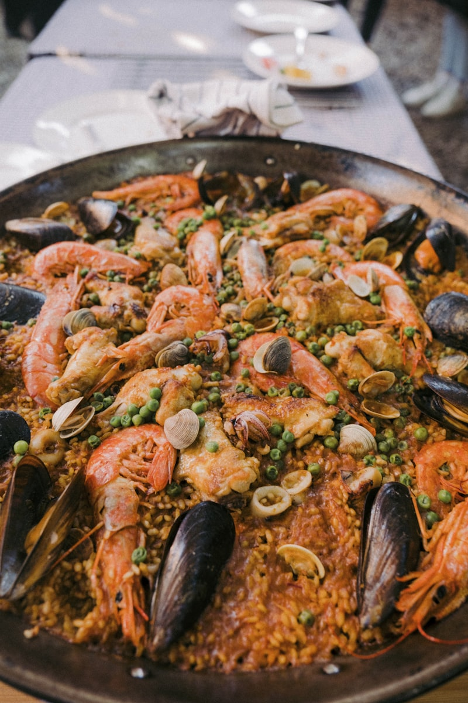

Über uns
Die Geschichte hinter Jimmy's Tapas Bar

Küchenchef & Inhaber
Seit über 15 Jahren bringe ich die authentischsten Aromen Spaniens an die deutsche Ostseeküste. Meine Leidenschaft für die spanische Küche begann in den kleinen Tapas-Bars von Sevilla.
Ausbildung
Kochausbildung:
Valencia, Spanien
Spezialisierung:
Mediterrane Küche
Erfahrung:
Über 15 Jahre
Philosophie
In Jimmy's Tapas Bar verwenden wir nur die besten Zutaten – von handverlesenem Olivenöl aus Andalusien bis hin zu frischen Meeresfrüchten aus der Ostsee.
Besonderheiten

Mediterrane Küche
Seit der Gründung steht Jimmy's Tapas Bar für authentische mediterrane Küche an der deutschen Ostseeküste.
Unsere Mission
Qualität:
Beste Zutaten täglich frisch
Tradition:
Authentische Rezepte
Service:
Gastfreundschaft & Atmosphäre
Spezialitäten
Von den ersten kleinen Tapas bis hin zu unseren berühmten Paellas – jedes Gericht erzählt eine Geschichte von Tradition und Qualität.
Atmosphäre
An beiden Standorten erleben Sie die entspannte Atmosphäre des Mittelmeers, während Sie den Blick auf die Ostsee genießen können.
"Essen ist nicht nur Nahrung – es ist Kultur, Tradition und Leidenschaft auf einem Teller."— Jimmy Rodriguez